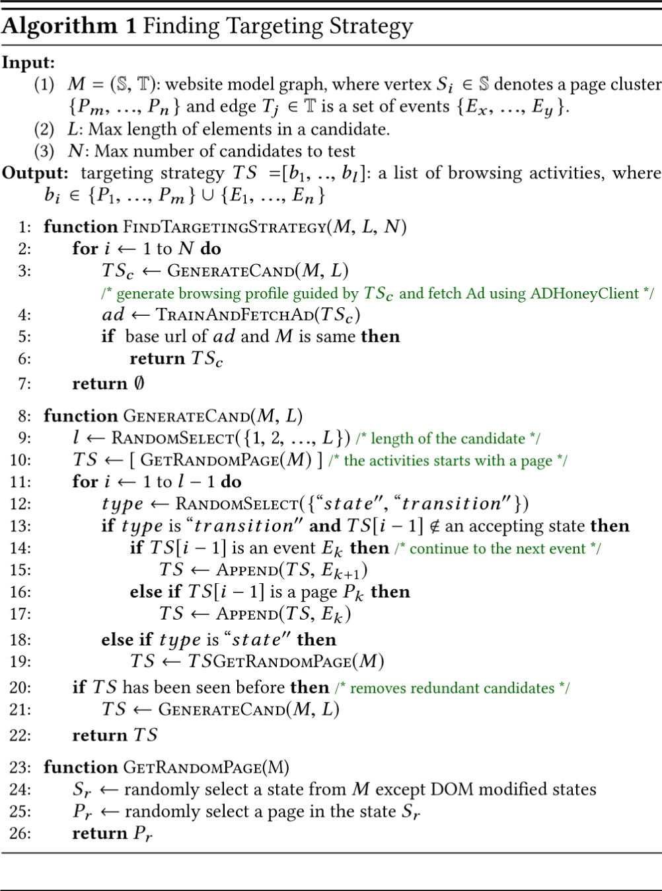

This is a web copy of https://doi.org/10.1145/3178876.3186096 originally published by ACM Press, redistributed under the terms of Creative Commons Attribution 4.0 (CC BY 4.0). The modifications from the original are solely to improve HTML aiming to make it Findable, Accessible, Interoperable and Reusable. augmenting HTML metadata and avoiding ACM trademark. To reference this HTML version, use:
Permalink: https://w3id.org/oa/10.1145/3178876.3186096
DOI: https://doi.org/10.1145/3178876.3186096
WWW '18: Proceedings of The Web Conference 2018, Lyon, France, April 2018
In this paper, we present a new ad budget draining attack. By repeatedly pulling ads from targeted advertisers using crafted browsing profiles, we are able to reduce the chance of showing their ads to real-human visitors and trash the ad budget. From the advertiser profiles collected by an automated crawler, we infer advertising strategies, train satisfying browsing profiles and launch large-scale attacks. We evaluate our methods on 291 public advertisers selected from Alexa Top 500, where we successfully reveal the targeting strategies used by 87% of the advertisers we considered. We also executed a series of attacks against a controlled advertiser and 3 real-world advertisers within the ethical and legal boundary. The results show that we are able to fetch 40,958 ads and drain up to $155.89 from the targeted advertisers within an hour.
CCS Concepts: • Security and privacy → Spoofing attacks; Web application security;
ACM Reference Format:
I Luk Kim, Weihang Wang, Yonghwi Kwon, Yunhui Zheng, Yousra Aafer, Weijie Meng, and Xiangyu Zhang. 2018. AdBudgetKiller: Online Advertising Budget Draining Attack. In WWW 2018: The 2018 Web Conference, April 23–27, 2018, Lyon, France. ACM, New York, NY, USA 11 Pages. https://doi.org/10.1145/3178876.3186096
Online advertising is the primary source of income for many Internet companies. In the US market, Google and Facebook generated $36.69 and $12.4 billion [22] from advertising in 2016 respectively. According to a report by the Internet Advertising Bureau (IAB), the revenues generated from Internet advertising in the United States totaled $72.5 billion in the full year 2016 [20], which represents an increase of 21.8% from the revenues reported in 2015. It is estimated that the U.S. digital advertising will continue its growth and the ad revenue will reach $83 billion in 2017 [22].
In its basic form, online advertising entails selling spaces on websites to parties interested in showing ads for a monetary fee. However, the mechanisms and backing up the online advertising ecosystem are quite complex. The ad delivery infrastructure involves four major parties: publishers, advertisers, ad network, and ad exchange. Publishers are websites owners who offer space to display ads on their websites. Advertisers pay publishers for ad slots to place specific ad content with embedded links. Ad networks play the role of match-makers to bring together publishers with advertisers who are willing to pay the most for the publisher's offered space. Ad exchanges are networks of ad networks. An ad exchange works similarly as an ad network, except that the buying and selling entities within an ad exchange are ad networks.
To reach the most receptive audience, advertisers often use sophisticated targeting methods to serve ads to the right viewers. The targeting strategies can either be geographical based such as serving an ad to users in a specific country or demographically focused on age, gender, etc. They can also be behavioral variables (such as a user's browsing activities and the purchase history) or contextually focused by serving ads based on the content of a website. In addition, advertisers may employ different targeting strategies. Some advertisers may value customers who placed an item in cart as more promising potential buyers than customers who simply browsed the item page. So they deliver different ads to these two types of customers. Others may consider them as equally favorable and apply the same strategy.
Retargeting is a technique where advertisers use behavioral targeting strategies to promote ads that follow users after they have expressed a prior interest in an advertiser's website, such as looked at or purchased a particular product. Retargeting is very effective as a retargeting ad is personalized to an individual user's interests, rather than targeting groups of people whose interests may vary.
Given the underlying lucrative benefits, the involved ad parties have strong incentives to conduct fraudulent activities. In fact, advertising fraud becomes a massive problem in ad industry and is ruining this billion-dollar business. According to IAB, ad fraud is costing the U.S. media industry around $8.2 billion in 2015 [19] and half of the loss derives from “non-human traffic”.
In this paper, we propose an innovative ad budget draining attack by precisely fetching ads from the targeted advertisers. Our technique is able to reverse engineer targeting strategies and train browsing profiles that satisfy the conditions set by the advertisers. In summary, we make the following contributions.
The rest of this paper is structured as follows. We introduce the online advertising ecosystem and fraudulent activities in Sec. 2. In Sec. 3, we describe the ad budget draining attack in details. We explain the evaluation results on both public and controlled advertisers in Sec. 4. We discuss potential countermeasures in Sec. 5 and related work in Sec. 6. We conclude the paper in Sec. 7.
In this section, we discuss the entities in the ecosystem and explain how retargeting ad works. We also show existing threats of the ad ecosystem.
The entities in the ad ecosystem include publishers, advertisers, ad networks, and ad exchanges. Publishers are the websites who earn money by selling ad space on their pages. Advertisers are the buyers who pay ad networks to deliver their ads. Ad networks are the entities that connect advertisers with websites and help advertisers find right publishers. Ad exchanges are networks of ad networks, which enable ad traffic transactions among ad networks.
Fig. 1 explains how an ad is delivered by an ad exchange. When a user visits the publisher website ①, an ad request is sent to the ad exchange ②. The ad exchange conducts a real-time auction, where the exchange sends requests to ad networks ③. Based on the user's characteristic, ad networks respond with their offers ④. The ad exchange picks an offer and delivers the winner's ad to the user ⑤. The whole auction is done in milliseconds.
The ecosystem delivers ads for a fee. There are several pricing models and cost per thousand impressions (CPM) is commonly used. Assume the CPM is $7 in Fig. 1. The winning advertiser (Advertiser 2) pays 0.7 cents per ad, which will be split among the ad network, the ad exchange, and the publisher.
E-commerce websites want attract potential customers by all means, hoping they will make purchases, become registered users, etc. The percentage of visitors attracted is called the conversion rate. In reality, only 2% of visitors take desired actions in their first visit [33]. Retargeting is created to attract the remaining customers by display personalized ads. It tracks website visitors and delivers customized ads when they visit other websites.
In particular, advertisers need to identify a list of high-value visitors. To do so, advertisers include a retargeting pixel, which is a small snippet provided by a retargeting service provider, in their web pages. When a user arrives, the pixel drops an anonymous cookie and enroll this visitor to the list. The anonymous cookie acts as the browsing profile, which is a set of IDs and memorizes browsing activities. The retargeting service providers identify unconverted visitors and deliver them personalized ads. To reach more visitors, the retargeting service providers maintain partnership with major ad networks, such as Facebook, and Google Display Network. They participates the real-time ads auctions and bids aggressively.
Retargeting is very effective. E-commerce sites can save money and efforts by selectively targeting visitors who have already expressed interests. According to Kimberly-Clark, a global leader in selling paper products, they accounted for $50-60\%$ conversion rates from their retargeting efforts [11]. Similarly, [23] reported that online retailer ShopStyle gained a 200% increase in retargeting conversions. Retargeting also benefits customers because the ads delivered are relevant to their interests.
While ad exchanges enable efficient and powerful campaigns, their pricing models make the system a highly lucrative target for cyber-criminals. For instance, to artificially inflate the actual impression amount and earn more money, a publisher can fabricate visits to publisher pages such that the advertiser's ad budget is wasted because the ads were not seen by real human visitors. Such fraudulent activity is called impression fraud. Although ad networks and exchanges perform real-time monitoring, it is always difficult to prevent from various kinds of fraud activities because of the huge amount of ad traffic.
In this section, we elaborate the ad budget draining attack. The victims of our budget draining attack are people or companies that advertise their e-commerce websites using retargeting ad services. The immediate consequence of the attack is the wasted advertisement budget. Moreover, the chance of their ads being displayed can be reduced since it would be difficult to win during the ad auction with the drained ad budget. The potential attackers can be competitor advertisers who may try to drain the others’ ad budget and unfairly win the competition. Another possible scenario is denial of service (DOS) attacks performed by people who seek to make ads from the targeted advertiser unavailable for the purpose of a protest. Fig. 2 shows the overall attack procedure. The attacker collects data about the targeted advertiser, generates attack modules that automatically craft browsing profiles and pull the victim's ads. Note that the attack modules can be independently deployed to launch distributed attack. Throughout these process, the attacker can drain the targeted advertiser's ad budget by repeatedly fetching ads. The details of our attack mechanism are explained in the rest of this section.
As discussed in Sec. 2, ad networks track website visitors and deliver targeted ads if they satisfy the advertising strategies. Therefore, identifying the strategies is the first step to attack a particular advertiser. Since ad networks may define arbitrary strategies, effectively reverse-engineering the retargeting logic and craft corresponding browsing profiles are the keys to reproducibly launch large-scale attacks. As shown in Fig. 3, website modeling, advertiser profiling, attack module generation and attack distribution are the major steps involved in the ad budget draining attack.
① Website Modeling.A website model represents structural designs and relationships between web pages. In order to be classified as advertisers’ favored customers and eventually see their ads, one effective way is to visit the advertisers’ websites and trigger the tracking logic. However, identifying desired navigation sequences that effectively trigger the tracking logic (e.g., products need to be put in the shopping cart) is not trivial due to the huge search space. Therefore, our first step is to create a model for the targeted website to guide the search. In particular, we navigate the targeted website, apply clustering algorithms to the pages, then create a Finite State Machine (FSM) model. Details can be found in Sec. 3.2.
② Advertiser Profiling.In this step, we focus on inferring targeting strategies. We develop ADHoneyClient to automatically discover the strategies based on black-box testing techniques. We also identify the optimal ads fetch count to work around the rate limits set by the ad networks. We explain our algorithms in Sec. 3.3.
③ Attack Module Generation.The attack modules generated contain the training data and the utilities to create satisfying browsing profiles, where training data is a set of HTML page with ads tracking tags. The module also features an fetch page and an attack engine. The fetch page is a single HTML page with several ads slots that pull the targeted ads. The attack engine drives the whole training and ad fetching procedure. As ad networks may equip IP based defense mechanisms, our attack engine can leverage the public proxy lists and randomly change IP addresses to evade IP-based detections. Details can be found in Sec. 3.4.
④ Attack Distribution.The final step is to deploy the attack modules on multiple machines to launch a distributed attack. In particular, each attack module trains a browsing profile satisfying the strategy from the training pages and repeatedly fetches ads using the ad fetch page. We explain the details in Sec. 3.5.
A website model describes its structure and transitions among pages. It can be used to guide the targeting strategy discovery. Fig. 4 shows the steps for model creation.
3.2.1 Browsing Trace Collector. The browsing trace collected at ① in Fig. 4 is used to cluster pages. The collector automatically records browsing activities while an attacker explores the targeted website. Table 1 shows example traces. We record two types of data: pages visited and events triggered. The page data contains the HTML source code and the corresponding URL. If no redirection happens, the page ID is recorded (e.g., P 4 in Table 1). The event data describes the browsing action, the DOM object involved, and action attributes.
Note that we do not require a complete website model. Instead, we only need a few inputs. In practice, we observed that usually a small number of actions are sufficient to trigger the tracking logic. For example, if a visitor sees ads after she visited the advertiser's product page, only one action (i.e., visiting the advertiser's product page) is needed. However, if an advertiser targets visitors who added items to the shopping cart and left without buying, the actions of 1) visiting a product page, 2) clicking the add-to-cart button and 3) visiting the cart page are needed.
| [c]@c@Trace | Page | Event | ||||
|---|---|---|---|---|---|---|
| No | ||||||
| ID | URL | ID | Action | XPath | Data | |
3.2.2 Page Clustering. With the trace collected, we group similar pages into clusters based on its functionality. For example, P 3 and P 7 in Table1 are grouped together as the product page. We apply different clustering methods based on page types:
3.2.3 Model Builder. The model builder connects the clusters based on the order observed in traces and assigns event data to the edges. As a result, a Finite State Machine (FSM) is created, where nodes represents states and edges with event annotations denote transitions. Fig. 5 shows a model created from the example traces. By having a model, we can create proper browsing profiles as many as possible, and more importantly, we can avoid creating redundant profiles.
As discussed in Sec. 2, ad networks track website visitors and deliver targeted ads if they satisfy the advertising strategies. As strategies are invisible to us, we have to infer the strategies by profiling the targeted advertisers.
3.3.1 ADHoneyClient: An Automated Ad Crawler. We need a large amount of ads related data to infer the retargeting logic. To automate the data collection process, we develop an ad crawler ADHoneyClient to fetch ads with customized browsing profiles and emulate browsing activities. As ads are probably the most complicated and dynamic snippets observed on general websites, ADHoneyClient has to handle complicated DOM objects and dynamic JavaScript. ADHoneyClient has the following two components:
1) Browsing Profile Trainer.Browsing profiles are tracking IDs stored in cookies that memorize the browsing history. Browsing profile trainer crafts browsing profiles by triggering ads tracking logic. Starting from a fresh profile, the profile trainer produces customized browsing profiles by simulating browsing activities. It navigates the website guided by the model with example inputs. In the meantime, tracking scripts can update the browsing profile and send browsing histories to the retargeting service providers.
2) Ad Extractor.The Ad extractor fetches ads using the crafted browsing profile generated by the trainer. In particular, it infers the targeting strategy, ad specs and the optimal fetch count. Details will be explained in Sec. 3.3.2.
When ads arrive, Ad parser determines their sources, specifications (such as types and sizes) and the ad network involved. It also extracts ads related HTML tags. In particular, since ads are usually rendered in the nested <iframe> for security purposes, it drills down and looks for specific ids (e.g. “google_ads_iframe_*” for DoubleClick). Once found, it collects element attributes as well as HTML tags inside. To identify ad networks, we manually developed 53 signatures. For example, the famous retargeting ad networks Criteo [4] can be identified if the src of <iframe> is *.criteo.com/delivery/r/afr.php?. Besides, Ad parser harvests all URLs included in the HTML pages pointed by ads related <iframe>. It also determines the size and type of the ads from the attributes of observed <embed>,<object>, <video> and <img>. We found some tags found in ads related iframes are not useful. We only collect the tags listed in Table 2 for better efficiency.
| HTML tag | Attribute | Ad information |
|---|---|---|
| <a> | id, href | ad_url, ad_network |
| <script> | id, src, innerHTML | ad_url, ad_network |
| <noscript> | innerHTML | ad_url |
| <iframe> | id, src, name | ad_network |
| <img>,<embed>,<object>,<video> | width, height | type, size |
3.3.2 Advertiser Profiling. In this subsection, we explain the targeting strategy, Ad specification, and optimal Ad fetch count produced by ADHoneyClient, which will be used as the training data in the next step.
Targeting Strategy. A targeting strategy is a sequence of browsing activities which can be used to identify high-value customers. For example, advertisers can target at visitors who browsed the product pages or left something in carts without buying. A target strategy simulates the browsing activities demonstrated by such favored visitors. Take the website model in Fig. 5 as an example. A corresponding browsing activity example can be [visiting a product page, choosing an option, adding it to a cart], which can be described by a path covering states and transitions S3, T4, S5, T6 and S4. As our website model is deterministic, the representation can be simplified to S3, T4 and T6. To concertize it, we pick a page/event from each state/transaction and get a targeting strategy [P7, E7, E8].
Algorithm 1 explains how we generate a target strategy from the website model graph produced in Sec. 3.2. The output target strategy is a list of browsing activities, where each activity can be either a page or a event obtained from the model.
Function
Function
A naive way to select the next activity is to follow the transitions in the FSM website model. However, we observed it cannot effectively create diverse candidates. Instead, we randomly select a page from a state when we want to have a “state” as the next activity. In this way, we can produce more diverse models especially when the model coverage is low. For instance, a strategy generated can be [P7, P1, E1], where we directly go to P1 after visiting P7 even though there is no edge between them on the model. Intuitively, this simulates the random jumps among pages during the navigation.
In particular, when we choose to have a “transition” as the next activity (line 13), we append the consecutive event to the activity list (lines 15 and 17). If the type is “state”, we select a random page from a random state (lines 24 and 25). Please note that the DOM modified states are excluded as they require DOM modification events and thus not directly accessible (line 24).

Ad Specification.Ad networks define ads parameters such as dimensions and formats (e.g. image, flash, video, etc.) that advertisers have to follow. As we will need to seed ad slots to obtain the desired ads, these specs are important too. For example, if the size of an desired ad is 300 × 250 but we only supports 160 × 600, it will not be delivered due to the inconsistency. Therefore, we also collect ads specs. Although some ad providers support responsive banners, where the size can be automatically determined at the time of fetching, ads specs are still useful as they may prevent potential inconsistencies and improve the success rate.
Optimal Fetch Count. In practice, a browsing profile may expire after repeatedly fetching a certain number of ads, as ad networks usually set a rate limit on the ads delivered to a single user. Therefore, we also need to infer the optimal fetch count, which is the number of the ads that can be fetched using a single profile. In particular, we monitor the fetch rate using a browsing profile until the rate drops significantly, we use the number of ads fetched before drop as the optimal fetch count.
For example, we fetch 30 ads per batch using a single browsing profile from two advertisers. Fig. 6 shows the number of ads fetched in each batch. For advertiser 1, the fetch rate drops to 70% at batch 6 and then to 0. Similar patterns are observed for advertiser 2. After the 3rd batch, the rate is decreased to 6%. Therefore, the optimal fetch counts for them are 180 and 90 respectively.
In our experience, we use 50% as the threshold to balance the efforts of creating new profiles and ads fetching. In other words, once the targeted ads fetch rate drops below 50%, we stop fetching and set the number of ads fetched so far as the optimal fetch count.
An attack module contains three components: tracking tag-only page, the ad fetch page, and the attack engine. The first two are HTML pages for browsing profile training and ads fetching. The attack engine drives the process based on the attack parameters.
To train browsing profiles, we emulate activities specified in targeting strategies. This is one of the most time consuming parts as we have to repeatedly create new profiles. To correctly set the tracking IDs and browsing histories, we have to trigger the tracking scripts (Sec. 3.3.1). Unfortunately, tracking scripts are usually executed after the page is fully loaded, which significantly drags down the attack performance. To improve its efficiency, we use the tag-only training pages extracted from the original pages that only contain the tracking scripts.
Fig. 7 shows how tag-only training pages are built. We get the HTML source code from the fully rendered page and extract JS snippets whose tags match pre-collected tracking tag signatures. We then build a tag-only training page using the extracted scripts and the mandatory DOM elements such as <html>,, and <body>. The snippets at the bottom in Fig. 7 is the example output.
An ad fetch page is an HTML file containing a set of ad slots. It is similar to the crafted page created for ADHoneyClient (Sec. 3.3.1). We configure each ad slots based on the collected ad specs. Besides, we need to optimize the number of ad slots per a batch for better efficacy. However, it is difficult to predict the appropriate number because the ad loading procedure varies. Therefore, we perform an experiment in this step to infer the optimal number of ad slots per batch.
To be specific, we compare the total time spent to fetch a particular number of ads. As explained in Sec. 3.3.2, we can only fetch a limited number of ads with a single browsing profile. Therefore, we use it as the upper bound in each experiment. For example, suppose the optimal fetch count is 180. We first fetch 10 ads each time and repeat for 18 times. Then, we try different batch size and compare the time needed to get all ads specified by the optimal fetch count (180 in this example). The results are shown in Fig. 8. We achieve the best performance when we fetch 20 ads per batch. Therefore, we include 20 ad slots in the ad fetch page in this example.
3.4.3 Attack Parameters. Attack parameters are a set of data used by the attack engine to customize the attack process. We may specify the attack time including the start time and duration. We can set the attack strategy, which can be exhaustive or smart. The exhaustive attack aims to drain the advertising budget as fast as possible. But it has high risk of getting detected. The smart attack is less aggressive and randomly sleeps to simulate human behaviors.
When the attack module is ready, it is deployed to virtual machines hosted on public cloud services, such as Amazon EC2[2], Google Cloud Platform[5], and Microsoft Azure[3]. Using public cloud services has the following advantages. First, it is cost effective. We can launch the attack for a few cents per hour (Sec.4). Second, we can evade the IP address based detections without additional cost.
The attack engine in the distributed attack modules repeats two operations: browsing profile training and ads fetching. It loads the tracking-tag only pages in sequence to train browsing profiles, and fetches ads using the ad fetch page. It repeats the whole procedure until the optimal fetch count is reached and disposes the browsing profile by flushing the cookies and local storages.
In this section, we describe the implementation and experiment results to validate the efficacy of our attack. We implement the ADHoneClient in Python based on the Selenium libraries [7]. The attack module is built as a chrome extension for easy deployment. The experiments are done on Microsoft Azure VMs. We choose the D1 v2 instances which provide the 2.4 GHz Intel Xeon E5-2673 v3 (Haswell) processor, 3.5GB RAM and Windows Server 2016. The pricing plan for a single instance is $0.13 per hour.
We launch attacks against two types of advertisers. We first target at controlled advertisers, where we create the advertiser and set up the advertising strategies. The second experiment is to attack public advertisers in the wild (after obtaining their approvals), where advertisers run real-world e-commerce websites. More experiment details can be found in [8].
| # of | budget | cost / | per VM | ||||
|---|---|---|---|---|---|---|---|
| VM | ads | CPM | drained | cost | drained | ads | drained |
| 1 | 2977 | $3.30 | $9.82 | $0.13 | 0.01 | 2977 | $9.82 |
| 2 | 4965 | $2.84 | $14.10 | $0.26 | 0.02 | 2483 | $7.05 |
| 3 | 10114 | $4.72 | $47.74 | $0.39 | 0.01 | 3371 | $15.97 |
| 4 | 12485 | $4.55 | $56.81 | $0.52 | 0.01 | 3121 | $14.20 |
| 5 | 16875 | $3.28 | $55.35 | $1.04 | 0.02 | 3375 | $11.07 |
| 6 | 21264 | $3.55 | $75.49 | $1.56 | 0.02 | 3544 | $12.58 |
| 7 | 28483 | $2.16 | $61.52 | $2.08 | 0.03 | 4069 | $8.79 |
| 8 | 30484 | $3.95 | $120.41 | $4.16 | 0.03 | 3811 | $15.05 |
| 9 | 37880 | $3.77 | $142.81 | $6.24 | 0.04 | 4209 | $15.87 |
| 10 | 40958 | $2.95 | $120.83 | $8.32 | 0.07 | 4096 | $12.08 |
| Average | 3506 | $12.24 | |||||
In this section, we evaluate our attack on the controlled advertiser created by us. As a valid advertiser served by a real-world ad network, we can get the actual numbers of ads being displayed, ad budget drained and the cost per 1,000 impressions (CPM) to precisely calculate the financial damage. Besides, we can perform large-scale attacks without concerning about ethical issues. So, we can evaluate the full capacity using distributed VMs.
In particular, we created an e-commerce website that sells coffee beans and registered in an ad network. We run an ad campaign with a banner image and set weekly ad budget to $150. We target users who visit our product pages. To confirm if our ad is available to public, we visit the page to create a satisfying browsing profile. Then we visit popular websites and check if it can be fetched. As shown in Fig. 9, our ad is actually displayed at the right bottom corner on one of the top news websites, nbc.com.
We create an attack module performing exhaustive attack for an hour. Fig. 10 shows a batch of the ads fetched using the attack module, where most of the ads are from our advertiser. We also prepare a virtual image with the attack module installed. We create 10 virtual instances using the image in order to evaluate the distributed attack capability. Using the attack machines, we conduct 10 rounds of attacks with different number of attack machines.
Table 3 describes the result of the distributed attack against the controlled advertiser. The first column shows the number of attack machines. The second column shows the total number of our ads we fetched. We report the CPM, the budget drained and the cost. The result shows that we successfully fetched about 40k ads using 10 attack machines. Moreover, the number of fetched ads is increasing linearly with the number of attack machines. On average, we fetched 3,506 ads per machine and drained $142.81 with 9 attack machines. We are able to drain 95% of the weekly budget within an hour. Note that we achieved better performance with 9 machines (instead of 10). The reason is that the CPM is measured dynamically. Although more ads are fetched using 10 VMs, the drained budget is less comparing to 9 VMs ($2.95 vs $3.77). We report the ratio of the cost to the drained budget. The costs are merely 1% to 7% of the drained budget, which indicates that the attack using distributed machines on public cloud is extremely cost effective.
In this section, we evaluate the attack against real-world advertisers by executing attacks within the ethical and legal boundary.
4.2.1 Advertiser Selection. We target at advertisers who own e-commerce websites and use retargeting ad services. Although our implementation can be easily extended to support other ad networks, currently we focus on DoubleClick. Therefore, we filter out the websites listed in the shopping category in Alexa Top 500 [1] based on the following criteria: 1) websites do not have online shopping functionalities, 2) websites only providing posting and payment functionalities and 3) non-English websites. We also remove websites if they do not have ad tracking tags or only support social networks/mobile ads. We use the remaining 291 websites to infer their targeting strategies.
As it may cause ethical issues if we run a large-scale attack to real advertisers, we reached out and requested permissions for a 10 minutes attack. We were able to get approval from 3 advertisers. We anonymize their identity and represent them as advertiser 1, 2 and 3 in the result. Besides, we only use a single attack machine for the experiments in order to minimize damages.
4.2.2 Revealing Targeting Strategies. The first step of the budget draining attack is to verify if the target is vulnerable. In our case, if we cannot reveal targeting strategies from a targeted advertiser, the advertiser is not vulnerable. So, we first reverse engineer the targeting strategies for each websites using our tool ADHoneyClient.
As shown in Table 4, we successfully revealed targeting strategies from 254 out of 291 websites (about 87%). The first column lists the targeting strategy categories. After targeting strategies are successfully reversed, we manually verify them the targeting strategies discovered and put them in proper categories. If we cannot interpret the intention behind the strategy, we mark them as arbitrary activities. The second column shows the average number of browsing activities in the targeting strategies. The third column shows the number of websites using the targeting strategies.
The results suggest that most advertisers mainly target the users who visit product pages. However, we can also see that 112 out of the 254 advertisers (about 44%) use sophisticated targeting strategies containing more than 3 browsing activities, which suggests that it is ineffective to get ads from such advertisers using the naive attack method like visiting only the product pages or the front pages.
We manually inspected why we failed on the remaining 37 websites $(13\%)$ . We found that they either do not use the data collected from the tracking tags or deploy long-term targeting strategies (showing ads after a week) that is robust to a transient attack. Besides, some target users using geographic data, which is orthogonal to browsing profiles.
| Avg.# of | # of | Avg. training time (sec) | |||
|---|---|---|---|---|---|
| Targeting Strategy | activities | websites | Full page | Tag-only page | Rate |
| Visiting a front page | 1 | 31 | 4.78 | 0.70 | 6.87 |
| Visiting a product page | 1 | 111 | 4.37 | 0.57 | 7.65 |
| Adding an item to a cart | 3.48 | 79 | 8.55 | 1.17 | 7.29 |
| Full shopping trip | 4.94 | 28 | 19.59 | 2.00 | 9.77 |
| Arbitrary activities | 5 | 1 | 24.70 | 2.23 | 11.08 |
| 6 | 1 | 22.98 | 2.11 | 10.89 | |
| 7 | 1 | 26.32 | 2.56 | 10.28 | |
| 8 | 1 | 29.34 | 3.09 | 9.50 | |
| 8 | 1 | 23.70 | 2.90 | ||
| Total websites | 254 | Avg. rate | 9.06 | ||
To validate the efficacy of the tag-only training approach, we conducted another experiment to show how significantly we improved performance comparing to the full page training. As described in Sec. 3.4.1, we create tag-only pages containing only tracking tags based on the targeting strategies revealed from the advertisers’ websites. We record browsing profile training times using the tag-only pages and the original fully-loaded pages. According to the results in Table 4, the tag-only training is about 9 times faster on average.
| Ad | Targeting | Optimal | # of ad | Ad | # | Ad | Estimated Damage | |||
|---|---|---|---|---|---|---|---|---|---|---|
| Network | Strategy | Fetch | slots per | type | of | category | CPM | Budget | ||
| Advertiser | Count | batch | AD Size | ads | drained/hour | |||||
| 1 | A | Visiting a product page | 180 | 20 | 300x250, 160x600, 728x90 | Image | 3134 | E-commerce | $8.29 | $155.89 |
| 2 | A | Adding an item to a cart | 180 | 20 | 300x250, 160x600, 728x90 | Image | 2742 | Retail | $5.85 | $96.24 |
| 3 | B | Visiting a product page | 90 | 30 | 300x250 | Image | 942 | E-commerce | $8.29 | $46.86 |
After we got the approvals, we launched the attack against 3 public advertisers. However, we cannot precisely obtain the numbers of ads displayed, CPM or budget because they are confidential business information. Instead, we use the public ad reports providing category-based average CPM for the first two quarters of 2016 [29, 30] and do our best to estimate the damage. Although the estimation may be biased, we believe it approximately demonstrates how much ad budget we could drain with our attack against real-world advertisers.
Table 5 shows the result of the attack and the estimated damage. The columns 2 to 7 describe the output of the advertiser profiling. The column 8 shows the number of ads we fetched from each advertisers. We report the average CPM in column 10 and use them to calculate the estimated damage. The estimated budget drained within one hour (column 11) ranges from $46.86 to $155.89.
We would like to highlight that we take the ethical issues seriously in our evaluation. This study was closely advised by a lawyer and conducted in a responsible manner. Our evaluation process has been reviewed by IRB and we received IRB exemption.
In the experiment of attacking a controlled advertiser, we own the advertiser's account and we pay for the charges. In the experiment with the three real-world advertisers, we explained our methods and potential damage to them. We start the experiments with their approvals. We purposely performed a proof-of-concept experiment using only 1 attack machine within 10 minutes to minimize the damage. We reported our findings and suggestions to them.
In spite of all of our efforts, due to the nature of the problem, ads from other advertisers showed up in our experiments. However, we confirmed that total rewards we collected from the untargeted advertisers as a publisher was less than $10. As the damages are distributed among all of the advertisers, the financial loss of one advertiser is negligible. More importantly, Google DFP is able to refund credits to advertisers when publishers violate their policies. We are in communication with DFP so that they can refund we earned throughout all of our experiments to the affected advertisers.
In this section, we describe countermeasures against our attack. We introduce the detection and prevent methods.
In order to detect our attack, ad providers or ad networks can look for anomalies in ad request traffics. We discuss three possible detection approaches and their limitations in the following paragraphs.
Browsing profile based detection.The number of ad requests generated by a benign users is usually smaller than that from attack machines. Therefore, the number of ad requests per browsing profile can be used as a detection feature. For example, if a large amount of requests with the same browsing profile within certain period are observed, we can consider this as the attack situation. However, this feature may not be effective since our attack does not use the same browsing profiles for many times. Another viable feature is the number of browsing histories in a single browsing profile. In order to increase efficiency of our attack, we only train a browsing profile with few pages in a targeted website. Those profiles created in that way contain the limited number of browsing histories, but benign users normally have larger number of browsing activities.
IP address based detection.IP address based blacklists can be used too. We can mark requests suspicious if an excessive number of requests are made from the same address. The attack using the short-time-use profiles may evade the browsing profile based detection, but it cannot bypass IP address based detection because requests are from the same IP address. However, as we discussed, attack machines created using virtual instances can have different IP addresses by simply rebooting them or leveraging publicly available proxies, which makes IP address based detection less effective.
Click-Through-Rate (CTR) based detection.CTR is a metric that measures the number of clicks advertisers receive from a certain number of impressions. Our attack generate a huge number of impressions without actually clicking them. Therefore, the CTR is low. However, this can be bypassed by inserting valid clicks between our attacks so that CTR can be increased.
Our attack is similar to distributed denial of service (DDoS) attack since both attacks generate a large amount of traffic using distributed machines. Although detecting the DDoS attack is not that difficult, the attack is still powerful due to the characteristic of distributed attack. Once an attack machine is blocked, a newly created machine can continue the attack. Therefore, it is possible that our attack can be detected with various features. However, we believe it is extremely challenging to nullify the attacks.
As it is challenging for ad networks to effectively suppress the attack, in this section, we suggest practical prevention approaches for advertisers. One possible solution is to use event-based targeting strategies. They can track users who actually scroll pages or stay on the website for a certain period of time. Such event tracking utilities are already supported by many ad networks [6, 9]. Although the methods may not completely prevent the attack, it can minimize the probability of being selected as a target.
Browsing profile manipulation.There are two existing studies that explore attack mechanisms based on browsing profile manipulation. Xing et al. [35] proposed an attack where adversaries can change the customized content of services from popular providers, such as YouTube, Amazon and Google, by manipulating browsing profiles. They provided specific attack methods for each services, and showed what attacks could be possible. While the proposed method worked well, their study only showed possibility of the attack. In contrast, our approach provided more practical, and beneficial attack mechanism for advertisers. The second attack is presented by Meng et al. [26]. They proposed a fraud mechanism to increase ad revenue for publishers by injecting higher-paying advertiser websites to publishers’ pages. Although they successfully increased the revenue, their attacking perspective is different.
Ad fraud and mitigation.Representative attacks and countermeasures were discussed in [15]. Recently, Stone-Gross et al. [32] performed a large scale study on fraudulent activities in online ad exchange and suggested practical detection methods.
Recent research are focused on specific fraud activities. Among them, click fraud/spam is the most popular one. Dave et al. [16] proposed a method for advertisers to measure click spam rates and conducted a large scale measurement study of click spam across ten major ad networks. Faou et al. [18] proposed a click fraud prevention technique using the value chain, the links between fraudulent actors and legitimate businesses. Their results showed that pressuring a limited number of actors would disrupt the ability of click fraud. Recently, Jaafar et al. [21] proposed FCFraud, a method for detecting automated clickers from the user side in order to prevent from becoming victimized attackers of click fraud. It analyzes web requests and events from user processes, classifies ad requests, and detects fraudulent ad clicks.
Another prevalent ad fraud activity is impression fraud/spam. Springborn et al. [31] showed an impression fraud via pay-per-view (PPV) networks by analyzing ad traffic from honeypot websites. Their results showed that hundreds of millions of fraudulent impressions per day were delivered by the PPV networks. Marciel et al. [25] proposed tools to audit systems of five major online video portals to investigate fraud in video ads.
Ad frauds also target on mobile apps. Crussell et al. [14] performed a study on mobile ad fraud perpetrated by Android apps. They developed MAdFraud, an automatic app analysis tool, to emulating event and extract ADs. They found that about 30% of apps made ad request are running in the background and identified 27 apps generating clicks without user interactions. Liu et al. [24] proposed a system to detect placement frauds that manipulate visual ads layouts to trigger unintentional clicks from users. They implemented a tool called DECAF and characterized the prevalence of ad frauds in 50,000 apps.
Online behavior tracking.Roesner et al. [28] investigated how third-party web tracking services performed. They showed how tracking worked, where the data can be stored, and how web tracking behaviors are classified. Englehardt et al. [17] proposed OpenWPM, a web privacy measurement platform, to show how third-party tracking cookies can be used to reveal browsing histories. Conti et al. [13] proposed TRAP, a system to unveil Google personal profiles using targeted AD. They focused on revealing topics a user is interested in instead of her actual browsing histories. Recently, Bashir et al. [10] showed information flows between ad exchanges using retargeting ad. They showed how user profiles were shared among ad exchanges by investigating 5,102 retargeting ads. Cahn et al. [12] assessed a privacy threat caused by the third-party tracking. Our research was inspired by their study and we utilized them to build our attack method.
In this paper, we present a novel ad budget draining attack against targeted advertisers in the online retargeting ads system. The attack creates crafted browsing profiles based on information collected by an ad crawler ADHoneyClient. It executes a large-scale attack using public cloud computing services and repeatedly fetches ads from the targeted advertisers. We evaluate the efficacy of proposed methods through an extensive set of experiments. We were able to reverse engineer the targeting strategies used by 254 (out of 291) public advertisers selected from Alexa Top 500. In addition, we executed a series of attacks against 3 real-world advertisers. The evaluation results show that our ad budget draining attack is effective and efficient. It successfully fetched 40,958 ads from the targeted advertisers and drained up to $155.89 from their campaign budget within an hour.
This paper is published under the Creative Commons Attribution 4.0 International (CC-BY 4.0) license. Authors reserve their rights to disseminate the work on their personal and corporate Web sites with the appropriate attribution.
WWW '18, April 23-27, 2018, Lyon, France
© 2018; IW3C2 (International World Wide Web Conference Committee), published under Creative Commons CC-BY 4.0 License. ACM ISBN 978-1-4503-5639-8/18/04.
DOI: https://doi.org/10.1145/3178876.3186096